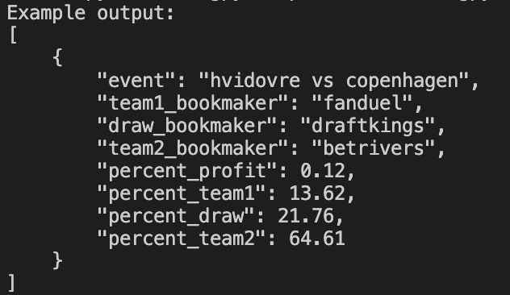

Hello, I'm Nicolas.
A student at Brown University studying Computer Science and Statistics.
Find some of my work below.
A student at Brown University studying Computer Science and Statistics.
Find some of my work below.

What is arbitrage?
Arbitrage is when you bet on all possible outcomes of a game. Usually, a bookmaker has margins on events. This means that if you add the odds for every outcome of a game, they will be above 100% (usually 103-110% depending on how popular the game is). Since there can only be 100% of outcomes, this means that the bookmaker will make 3-10% of all wagers on a game. However, this is only true if they are accurate when calculating the odds.
Every once in a while, a bookmaker will make a mistake when calculating the odds. For example, in the game teamA vs teamB, they might calculate the probability of teamA winning at 50% when in reality it is 60%. If a bookmaker makes such a mistake, you can profit off of this by betting on teamA winning from this bookmaker, since they are giving you better odds, and bet on teamB winning from a different bookmaker. If you add the probabilities of each team winning you get 50% + 40% = 90%, meaning that you will make a profit of 11% if you bet correctly on this game. Since you are betting on all possible outcomes of the match, you have no risk of losing money and can guarantee a profit on this game.
The only catch is that bookmakers don't make mistakes often, and if they do, they will find out and update the odds quickly. That is why you need to look at odds across lots of bookmakers and keep updating them if you want to realistically find consistent opportunities.
How the project works
The program first sets up a web driver to simulate web browsing. This is done with Selenium. The web driver is preloaded with specific options to try and avoid certain kinds of bot detections on websites (it still complies with all robots.txt files). With prewritten scripts for each bookmaker, it will visit the main URL for the sport it is checking. It then clicks through the website on all available leagues and scrapes the data for each available game in each league. This is done through BeautifulSoup. It then extracts/formats the data (bookmaker name, event name, team1 odds, draw odds, team2 odds), standardizes the event name, which is done to make sure a team such as Inter Miami/Inter Miami CF is considered the same (this is done with over 99% accuracy in the testing data), and inserts the data into a SQLite database. This is repeated for every bookmaker. After this, the web driver is closed.
The SQLite database has 3 tables: bookmakers, events, and odds. The bookmakers table holds all the unique bookmakers in the script and gives each one a unique id. The same is done for the events table. The odds table is populated as the data is collected from the scrapers and uses the unique bookmaker id and events id from their respective tables to efficiently classify the row that is being added. The benefits of this system are the following: the odds data is stored in a way that allows efficient querying and updates, you can re-run the scrapers multiple times to update odds without creating duplicate entries, and you have all of the events separated from the odds to allow for an easier query to find arbitrage opportunities.
A function in sql.py then looks through all the odds data in the database to find the best odds for each outcome. If the percentages add up to less than 100%, it then prints out all the information about the arbitrage opportunity (the game, the bookmaker to use for team1 winning, the bookmaker to use for a draw, the bookmaker to use for team2 winning, the percent of guaranteed profit you can make, the percent to bet on team1, the percent to bet on a draw, and the percent to bet on team2). The sum of percentages is the sum of the inverses of the European odds for each outcome. The percent of guaranteed profit is 100/(sum of inverses). The percent to bet on each outcome is 100/(sum of inverses * European odds for outcome). The function checks for opportunities for every event in the database, and performs these calculations as needed. You then have the option of receiving an email with the opportunities or simply printing them out in the terminal.
Since this is essentially a risk-free way of making money, I will not be making the complete program public. However, I have published a demo of the program on GitHub to show the basics of how it works. The demo only illustrates the process for soccer games across 2 sportsbooks.
View a demo of this project in GitHub
I wrote this program to help me with registration for future classes I want to take, since some of the classes I wanted to enroll in have very limited spots, and I wasn't able to register for them in early registration.
The script uses Python with libraries like Selenium to web scrape the information from the site, Psutil to send me an email when there are seats available, and Argparse to interpret the command from the terminal. I also used Docker to be able to run the script locally on my computer in the background without interfering with other work.
The script can run in 2 ways: through a web driver or through Docker. Either way, it works similarly. It first opens Chrome, navigates to the course registration website, and inputs the course information from the command line into the search boxes. It then extracts the seat availability from the course and stores it locally. It continues to do this for all the courses in the command. After this, it checks to see if the numbers are greater than 0. If they are, it sends me an email notifying me that there are seats available for that course and removes the course from the list of courses to check. If not, it'll wait 5 minutes, and run the script again with the updated course list. It will continue to do this until all the courses have seats available or I manually stop it.
Demos of how it works are shown above.
Making the repository public would defeat its purpose, so at this time, it is private.


I made this game in Unity. It is essentially the original PacMan game, but you are playing it in 3D from PacMan's Point of View. To make it unique, I also added an underground dimension where everything is inversed, which you can access by going into the Ghost House, along with some other mechanics to make the player experience better.
Currently only supported in MacOS and Windows.
View this project in GitHub

The custom search engine works by first processing the wiki file. The collection of articles/pages is in an XML file, with each page having a title, id, and text. All the words in the title and text are then stripped to the root word and then used to populate various data structures that are then used for determining importance.
Using a combination of word frequency in each page and the entire wiki, it calculates the importance of each term in each page with the Term Frequency - Inverse Document Frequency (tf-idf) algorithm. It then also sees how many times a page is linked to/from in the wiki, and uses a PageRank algorithm to determine how authoritative a page is. It then combines both of these importance values to determine how relevant a document is to the wiki.
To complete the search engine, a querier is used to process search queries, score documents against queries based on the term relevance and PageRank, and then return the 10 documents with the highest scores.
Above is an example of search results for some terms in a small wiki used for testing.


Seamcarve works by turning an image into an array of RGB values and then finds which pixels have the least difference in RGB between its neighbors. After doing this, using a technique called dynamic programming, it starts finding seams spanning the entire image that would affect the image the least if they were to be removed. These seams are the ones highlighted in red in the above example images. The number of seams removed is specified by the user to resize the image to the desired size.
The final image shows the results of this content-aware image resizing.

My personal website. Get to know me, my projects, skills, and experience with computer science and statistics. Other than that, it's pretty simple; you're looking at it right now.
View this project in GitHub


Travel Planner uses Breadth First Search (BFS) and Dijkstra algorithms to calculate what travel route best suits your needs, based on origin, destination, and whether you want the cheapest, fastest, or most direct route.
It uses a command line interface as its UI, with four commands: load, cheap, fast, and direct. To use Travel Planner, you must first 'load' the graph by feeding it 2 CSV files with city names and transport options. It uses these files to populate the graph.
After loading the graph, the user can pick whether they want the cheapest, fastest, or most direct route, as well as the origin and destination. The 'cheap' command uses the Dijkstra algorithm with the price as the weight. The 'fast' command uses the Dijkstra algorithm with time as the weight. The 'direct' command uses the BFS algorithm. Some examples are shown in the images above.


A local multiplayer game of Othello that has human/human, human/computer, and computer/computer compatibility.
This project uses a MiniMax algorithm that evaluates the results of all possible moves with board weights and possible scores. There are 3 computer levels, with a level-n computer looking n-moves deep before making the best move
The computer player uses a custom tree-like data structure that contains the current move it's evaluating, the score of that move, and a list of all possible moves that the other player could make after playing that move. After populating the data, with the height of the tree being the computer level, it finds which move would result in the best score/worst opponent score, and then plays it.


ML Decision Tree uses a basic Machine Learning model to receive training data and later predict a target attribute by building a tree-like structure to split on different attributes to eventually arrive at its decision.
The images above show an example of this process, where given a dataset of fruits/vegetables, it uses attributes such as color, protein, and calories to predict whether the food is a fruit or vegetable.
After parsing a CSV file with the training data on it, the model randomly selects different attributes to 'split' on, which then adds a node to the tree, and can either end with a leaf or keep branching out on more attributes. Running this model on various training sets averaged over 95% accuracy on training data and over 75% accuracy on testing data, with some of the larger datasets reaching almost 90% accuracy on testing data.


This tool outputs the equation for a graph that will help you win in the game Graphwar. The equation works by stringing together a lot of equations of the type (_)/(1+e^(-100*(x+_))) to essentially make a graph that can move precisely through the coordinate plane.
More detailed instructions on how to use it are in the repository.
View this project in GitHubFeel free to contact me below.
I'm always happy to discuss projects, business opportunities, or just chat in general.